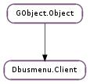

| Subclasses: | DbusmenuGtk3.Client |
|---|
| static | new(name, object) |
| add_type_handler(type, newfunc) | |
| add_type_handler_full(type, newfunc, *user_data) | |
| get_icon_paths() | |
| get_root() | |
| get_status() | |
| get_text_direction() |
| Name | Type | Flags | Description |
|---|---|---|---|
| dbus-name | str | r/w/c | Name of the DBus client we’re connecting to. |
| dbus-object | str | r/w/c | The Object on the client that we’re getting our data from. |
| group-events | bool | r/w | Event grouping lowers the number of messages on DBus and will be set automatically based on the version to optimize traffic. It can be disabled for testing or other purposes. |
| Name | Parameters | Return | Description |
|---|---|---|---|
| event-result | GObject.Object, str, GLib.Variant, int, int | ||
| icon-theme-dirs-changed | int | ||
| item-activate | GObject.Object, int | ||
| layout-updated | |||
| new-menuitem | GObject.Object | ||
| root-changed | GObject.Object |
| Name | Type | Access |
|---|---|---|
| parent | GObject.Object | r |
Bases: GObject.Object
| Parameters: | |
|---|---|
| Returns: | A brand new Dbusmenu.Client |
| Return type: |
This function creates a new client that connects to a specific server on DBus. That server is at a specific location sharing a known object. The interface is assumed by the code to be the DBus menu interface. The newly created client will start sending out events as it syncs up with the server.
| Parameters: |
|
|---|---|
| Returns: | If registering the new type was successful. |
| Return type: |
This function connects into the type handling of the Dbusmenu.Client. Every new menuitem that comes in immediately gets asked for it’s properties. When we get those properties we check the ‘type’ property and look to see if it matches a handler that is known by the client. If so, the newfunc function is executed on that Dbusmenu.Menuitem. If not, then the Dbusmenu.Client ::new-menuitem signal is sent.
In the future the known types will be sent to the server so that it can make choices about the menu item types availble.
| Parameters: |
|
|---|---|
| Returns: | If registering the new type was successful. |
| Return type: |
This function connects into the type handling of the Dbusmenu.Client. Every new menuitem that comes in immediately gets asked for it’s properties. When we get those properties we check the ‘type’ property and look to see if it matches a handler that is known by the client. If so, the newfunc function is executed on that Dbusmenu.Menuitem. If not, then the Dbusmenu.Client ::new-menuitem signal is sent.
In the future the known types will be sent to the server so that it can make choices about the menu item types availble.
| Returns: | A None-terminated list of icon paths with |
|---|---|
| Return type: | [str] |
Gets the stored and exported icon paths from the client.
memory managed by the client. Duplicate if you want to keep them.
| Returns: | A Dbusmenu.Menuitem representing the root of |
|---|---|
| Return type: | Dbusmenu.Menuitem |
Grabs the root node for the specified client client. This function may block. It will block if there is currently a call to update the layout, it will block on that layout updated and then return the newly updated layout. Chances are that this update is in the queue for the mainloop as it would have been requested some time ago, but in theory it could block longer.
menu on the server. If there is no server or there is an error receiving its layout it’ll return None.
| Return type: | Dbusmenu.Status |
|---|
| Return type: | Dbusmenu.TextDirection |
|---|